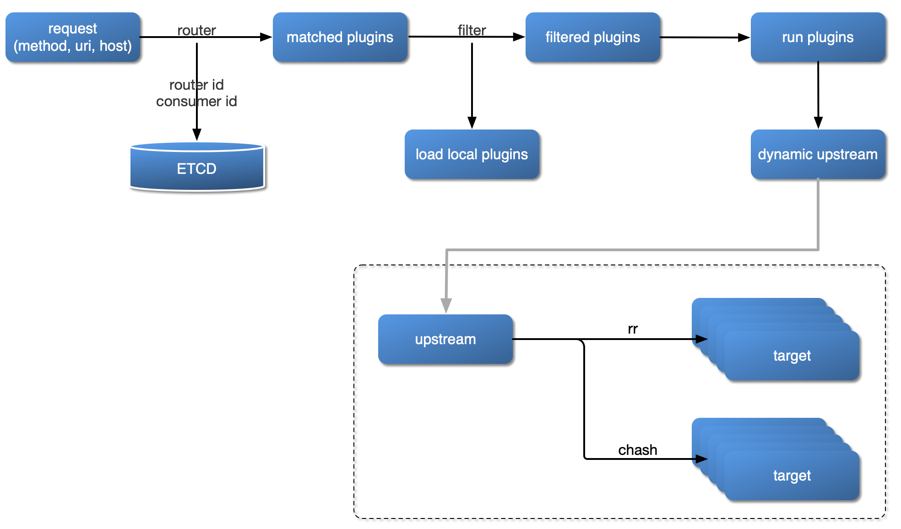

Architecture
Plugin Loading Process

Plugin Hierarchy Structure

APISIX Config
We can start using APISIX just by modifying conf/config.yaml file.
Note apisix will generate conf/nginx.conf file automatically, so please DO NOT EDIT that file.
Route
The route matches the client's request by defining rules, then loads and executes the corresponding plugin based on the matching result, and forwards the request to the specified Upstream.
The route mainly consists of three parts: matching rules (e.g uri, host, remote_addr, etc.), plugin configuration (current-limit & rate-limit, etc.) and upstream information.
The following image shows an example of some Route rules. When some attribute values are the same, the figure is identified by the same color.

We configure all the parameters directly in the Route, it's easy to set up, and each Route has a relatively high degree of freedom. But when our Route has more repetitive configurations (such as enabling the same plugin configuration or upstream information), once we need update these same properties, we have to traverse all the Routes and modify them, so it adding a lot of complexity of management and maintenance.
The shortcomings mentioned above are independently abstracted in APISIX by the two concepts Service and Upstream.
The route example created below is to proxy the request with uri /index.html to the Upstream service with the address 39.97.63.215:80:
When we receive a successful response, it indicates that the route was successfully created.
For specific options of Route, please refer to Admin API.
Service
A Service is an abstraction of an API (which can also be understood as a set of Route abstractions). It usually corresponds to the upstream service abstraction. Between Route and Service, usually the relationship of N:1, please see the following image.

Different Route rules are bound to a Service at the same time. These Routes will have the same upstream and plugin configuration, reducing redundant configuration.
The following example creates a Service that enables the current-limit plugin, and then binds the Route with the id of 100 and 101 to the Service.
Of course, we can also specify different plugin parameters or upstream for Route. Some of the following Routes have different current-limit parameters. Other parts (such as upstream) continue to use the configuration parameters in Service.
Note: When both Route and Service enable the same plugin, the Route parameter has a higher priority than Service.
Plugin
Plugin represents the plugin configuration that will be executed during the HTTP request/response lifecycle.
The Plugin configuration can be bound directly to Route or it can be bound to Service or Consumer. For the configuration of the same plugin, only one copy is valid, and the configuration selection priority is always Consumer > Route > Service.
In conf/config.yaml, you can declare which plugins are supported by the local APISIX node. This is a whitelisting mechanism. Plugins that are not in this whitelist will be automatically ignored. This feature can be used to temporarily turn off or turn on specific plugins, which is very effective in dealing with unexpected situations.
The configuration of the plugin can be directly bound to the specified Route, or it can be bound to the Service, but the plugin configuration in Route has a higher priority.
A plugin will only be executed once in a single request, even if it is bound to multiple different objects (such as Route or Service).
The order in which plugins are run is determined by the priority of the plugin itself, for example: example-plugin.
The plugin configuration is submitted as part of Route or Service and placed under plugins. It internally uses the plugin name as the hash's key to hold configuration items for different plugins.
Not all plugins have specific configuration items. For example, there is no specific configuration item under prometheus. In this case, an empty object identifier can be used.
Upstream
Upstream is a virtual host abstraction that performs load balancing on a given set of service nodes according to configuration rules. Upstream address information can be directly configured to Route (or Service). When Upstream has duplicates, you need to use "reference" to avoid duplication.

As shown in the image above, by creating an Upstream object and referencing it by ID in Route, you can ensure that only the value of an object is maintained.
Upstream configuration can be directly bound to the specified Route or it can be bound to Service, but the configuration in Route has a higher priority. The priority behavior here is very similar to Plugin.
Configuration
In addition to the basic complex equalization algorithm selection, APISIX's Upstream also supports logic for upstream passive health check and retry, see the table below.
| Name | Optional | Description |
|---|---|---|
| type | required | roundrobin supports the weight of the load, chash consistency hash, pick one of them. |
| nodes | required if service_name and k8s_deployment_info not configured | Hash table, the key of the internal element is the upstream machine address list, the format is Address + Port, where the address part can be IP or domain name, such as 192.168.1.100:80, foo.com:80, etc. Value is the weight of the node. In particular, when the weight value is 0, it has a special meaning, which usually means that the upstream node is invalid and never wants to be selected. |
| service_name | required if nodes and k8s_deployment_info not configured | The name of the upstream service and used with the registry, refer to Integration service discovery registry. |
| k8s_deployment_info | required if nodes and service_name not configured | fields: namespace、deploy_name、service_name、port、backend_type, port is number, backend_type is pod or service, others is string. |
| hash_on | optional | This option is only valid if the type is chash. Supported types vars(Nginx variables), header(custom header), cookie, consumer, the default value is vars. |
| key | required | This option is only valid if the type is chash. Find the corresponding node id according to hash_on and key. When hash_on is set as vars, key is the required parameter, for now, it support nginx built-in variables like uri, server_name, server_addr, request_uri, remote_port, remote_addr, query_string, host, hostname, arg_***, arg_*** is arguments in the request line, Nginx variables list. When hash_on is set as header, key is the required parameter, and header name is customized. When hash_on is set to cookie, key is the required parameter, and cookie name is customized. When hash_on is set to consumer, key does not need to be set. In this case, the key adopted by the hash algorithm is the consumer_id authenticated. If the specified hash_on and key can not fetch values, it will be fetch remote_addr by default. |
| checks | optional | Configure the parameters of the health check. For details, refer to health-check. |
| retries | optional | Pass the request to the next upstream using the underlying Nginx retry mechanism, the retry mechanism is enabled by default and set the number of retries according to the number of backend nodes. If retries option is explicitly set, it will override the default value. |
| enable_websocket | optional | enable websocket(boolean), default false. |
| timeout | optional | Set the timeout for connection, sending and receiving messages. |
| desc | optional | Identifies route names, usage scenarios, and more. |
Create an upstream object use case:
After the upstream object is created, it can be referenced by specific Route or Service, for example:
For convenience, you can also directly bind the upstream address to a Route or Service, for example:
Here's an example of configuring a health check:
More details can be found in Health Checking Documents.
Here are some examples of configurations using different hash_on types:
Consumer
Create a consumer object:
Create route object and enable key-auth plugin authentication:
Test request, the consumer_id after authentication is passed will be used as the hash value of the load balancing hash algorithm:
Cookie
Create route and upstream object, hash_on is cookie:
The client requests with Cookie:
Header
Create route and upstream object, hash_on is header, key is Content-Type:
The client requests with header Content-Type:
Router
A distinguishing feature of APISIX from other API gateways is that it allows users to choose different routers to better match free services, making the best choice between performance and freedom.
Set the route that best suits your business needs in the local configuration conf/config.yaml.
apisix.router.http: HTTP Request Route。radixtree_uri: (Default) only useurias the primary index. Support for full and deep prefix matching based on theradixtreeengine, see How to use router-radixtree.Absolute match: Complete match for the givenuri, such as/foo/bar,/foo/glo.Prefix match: Use*at the end to represent the givenurias a prefix match. For example,/foo*allows matching/foo/,/foo/aand/foo/b.match priority: first try absolute match, if you can't hit absolute match, try prefix match.Any filter attribute: Allows you to specify any Ningx built-in variable as a filter, such as uri request parameters, request headers, cookies, and so on.
radixtree_host_uri: Usehost + urias the primary index (based on theradixtreeengine), matching both host and uri for the current request.
apisix.router.ssl: SSL loads the matching route.radixtree_sni: (Default) UseSNI(Server Name Indication) as the primary index (based on the radixtree engine).
Consumer
For the API gateway, it is usually possible to identify a certain type of requester by using a domain name such as a request domain name, a client IP address, etc., and then perform plugin filtering and forward the request to the specified upstream, but sometimes the depth is insufficient.

As shown in the image above, as an API gateway, you should know who the API Consumer is, so you can configure different rules for different API Consumers.
| Field | Required | Description |
|---|---|---|
| username | Yes | Consumer Name. |
| plugins | No | The corresponding plugin configuration of the Consumer, which has the highest priority: Consumer > Route > Service. For specific plugin configurations, refer to the Plugins section. |
In APISIX, the process of identifying a Consumer is as follows:

- Authorization certification: e.g key-auth, JWT, etc.
- Get consumer_id: By authorization, you can naturally get the corresponding Consumer
id, which is the unique identifier of the Consumer object. - Get the Plugin or Upstream information bound to the Consumer: Complete the different configurations for different Consumers.
To sum up, Consumer is a consumer of certain types of services and needs to be used in conjunction with the user authentication system.
For example, different consumers request the same API, and the gateway service corresponds to different Plugin or Upstream configurations according to the current request user information.
In addition, you can refer to the key-auth authentication authorization plugin call logic to help you further understand the Consumer concept and usage.
How to enable a specific plugin for a Consumer, you can see the following example:
Use the consumer-restriction plug-in to restrict the access of Jack to this API.
Add Jack to the blacklist
$ curl http://127.0.0.1:9080/apisix/admin/routes/1 -H 'X-API-KEY: edd1c9f034335f136f87ad84b625c8f1' -X PUT -d ' { "plugins": { "key-auth": {}, "consumer-restriction": { "blacklist": [ "jack" ] } }, "upstream": { "nodes": { "127.0.0.1:1980": 1 }, "type": "roundrobin" }, "uri": "/hello" }'
Repeated tests, all return 403; Jack is forbidden to access this API
$ curl http://127.0.0.1:9080/hello -H 'apikey: auth-one' -I HTTP/1.1 403 ...
Now, the limit-count plugin will work on all requets
we can list all GlobalRule via admin api as below:
Debug mode
Basic Debug Mode
Enable basic debug mode just by setting apisix.enable_debug = true in conf/config.yaml file.
e.g Using both limit-conn and limit-count plugins for a /hello request, there will have a response header called Apisix-Plugins: limit-conn, limit-count.
Advanced Debug Mode
Enable advanced debug mode by modifying the configuration in conf/debug.yaml file. Because there will have a check every second, only the checker reads the #END flag, and the file would consider as closed.
The checker would judge whether the file data changed according to the last modification time of the file. If there has any change, reload it. If there was no change, skip this check. So it's hot reload for enabling or disabling advanced debug mode.
| Key | Optional | Description | Default |
|---|---|---|---|
| hook_conf.enable | required | Enable/Disable hook debug trace. Target module function's input arguments or returned value would be printed once this option is enabled. | false |
| hook_conf.name | required | The module list name of hook which has enabled debug trace | |
| hook_conf.log_level | required | Logging levels for input arguments & returned value | warn |
| hook_conf.is_print_input_args | required | Enable/Disable input arguments print | true |
| hook_conf.is_print_return_value | required | Enable/Disable returned value print | true |
Example: